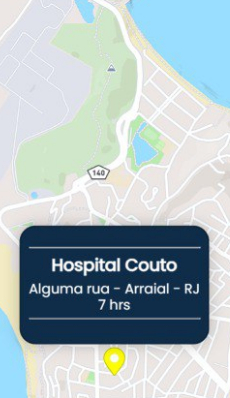
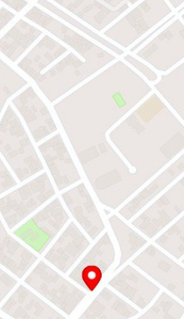

Eventos do mapa

Os marcadores amarelos são pontos já sugeridos no mapa, logo não são revisados. Sua serventia é para que o usuário tenha noção, no mapa, se um ponto que não está adicionado já foi sugerido. Este não tem opção de avaliação.
